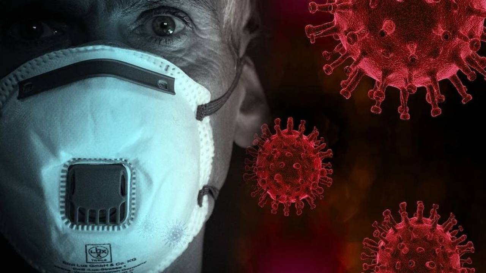

Коронавирус в США появился за несколько недель до вспышки в Ухане

Проведенные в США тестирования показали, что первые случаи заражения коронавирусом нового типа в стране произошли в декабре 2019 года, это позволяет прийти к выводу, что COVID-19 уже распространялся по миру за несколько недель до того, как в Китае зарегистрировали первые случаи заболевания.Об этом пишет 'Wall Street Jornal' со ссылкой на результаты соответствующего исследования.
Как следует из материалов, из 7389 образцов крови, собранных в период с 13 декабря 2019 года по 17 января 2020-го у доноров из девяти штатов, было выявлено 106 случаев заражения.Собранные Американским Красным Крестом образцы были отправлены в Центр по контролю и профилактике заболеваний США для тестирования, с целью определить наличие антител против вируса.
Результаты этого отчета предполагают, что инфекция SARS-CoV-2 могла присутствовать в США в декабре 2019 года, раньше, чем предполагалось ранее, - говорится в документе.
Как отмечает газета, открытие свидетельствует о том, что коронавирус распространялся по миру раньше, чем о нем стало широко известно, что, в свою очередь, может вновь актуализировать дебаты об источнике происхождения пандемии.
Исследование показало, что в середине декабря в западной части США имели место быть отдельные случаи заболевания.Антитела также были обнаружены в начале января у американцев в других штатах до того, как стало известно, что вирус был занесен в эти места.
Ученые указали на маловероятность того, что выявленные антитела были выработаны для сдерживания других коронавирусов, поскольку 84 образца обладают нейтрализующей активностью, специфичной для SARS-CoV-2.Они также отметили, что невозможно определить масштабы инфекции на уровне штата или страны на основе выборок, а также то, были ли случаи заражения завозными.
Ранее рентгенологи больницы Альберта-Швайцера в Кольмаре на востоке Франции заподозрили приход коронавируса во Францию осенью 2019-го: уже тогда были пациенты с характерными для инфекции симптомами.Они пришли к этому выводу после изучения почти 2,5 тысячи рентгеновских снимков, сделанных в период с 15 октября по 30 апреля.Отмечается, что первые пациенты с коронавирусом могли появиться во Франции еще в ноябре 2019-го: у пациентов, делавших снимки в тот месяц, обнаружили характерные для COVID-19 аномалии.
Коронавирус начал распространяться по миру после заражения нескольких нулевых пациентов.Такую теорию представил директор программы ВОЗ по чрезвычайным ситуациям в области здравоохранения Майкл Райан, запись трансляции брифинга доступна в Твиттер.
Мы не знаем, был ли это человек, который привел к росту случаев, было ли это животное, или заражение окружающей среды, — подчеркнул специалист ВОЗ, добавив, что, безусловно, были случаи, которые предвосхищали события на рынке в Ухане.Райан отметил, что выявление первичного случая заражения — важный аспект всех эпидемиологических расследований.
Posted On: 2020-12-03T10:02:00
Content Date: 2020-12-03
Download Date: 2021-03-17
Document ID: L0C049DGI